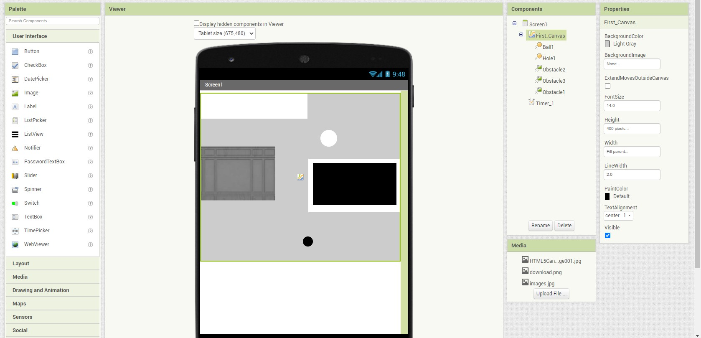
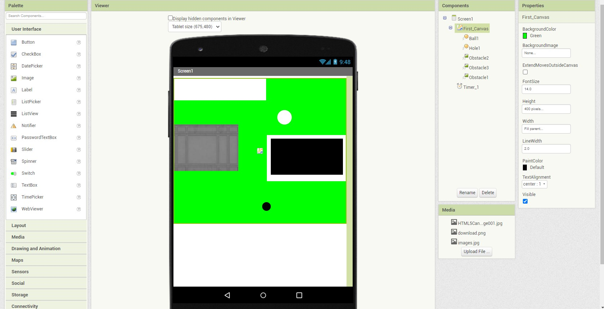

| Weeks | Progress | Milestone |
|---|---|---|
| Week 7 | No changes implemented. | N/A |
| Week 8 | Changing the screen colour to "green" of the game via the "design" editor. | We re-familiarize ourselves with the tools (in this case, the colour change through “First_canvas”, then click “BackgroundColor” via the “design” editor. |
| Week 9 | No changes implemented. | N/A |
| Week 10 | No changes implemented. | N/A |
| Week 11 | No changes implemented. | N/A |
| Week 12 | No changes implemented. | N/A |
| The next 10 weeks | Will definitely finish the game due to the extra time we get and the additional experiences we will get as a team. | Will be ready to launch in smartphone apps (App Store launching problem will be solved), and the addition of 3D features successfully. |
Progress of Week 7:

Progress of Week 8:
